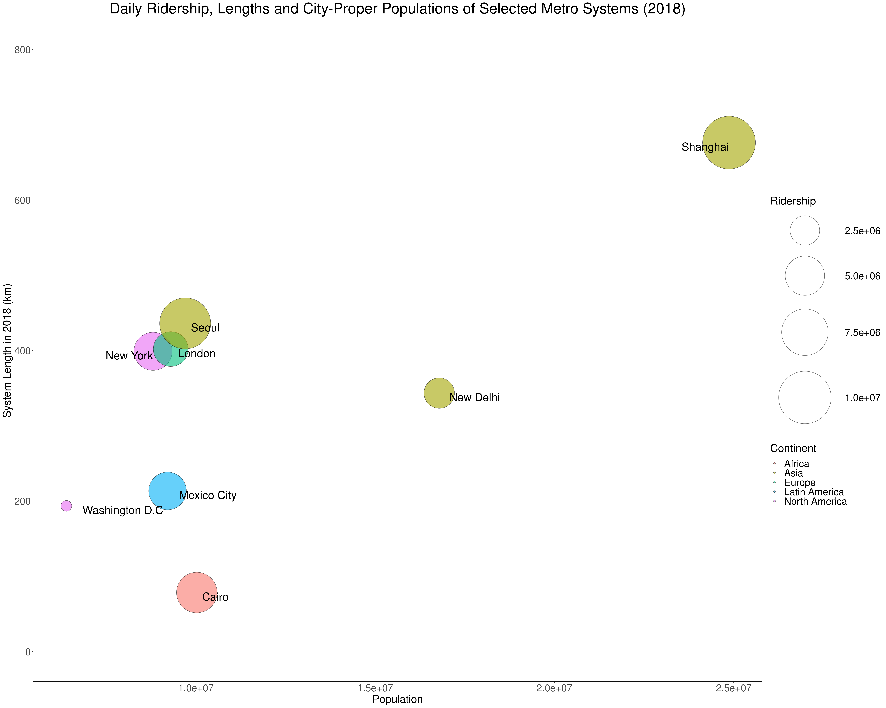

Mass transit systems are the life blood of any major city. Growing sustainably beyond a certain size necessitates fast, reliable and high-capacity rail transport to move masses between homes, schools, workplaces and host of other locations. Each city's rail system has its own unique characteristics and quirks, such as its name, topography, reliability, usage patterns or growth plans. New York City's subway system is no exception. First opened in the late 19th century, it has grown over the years to encompass 250 miles of track and more than 400 stations. In that time, it has become a New York City institution, and sparked both love and revulsion alike in the city's inhabitants.
Visualizing any subway system is a challenge, owing to the fact that no single set of numbers can truly encompass everything about such a system. Nevertheless, this essay attempts to make an effort to do so. First, it will visualize the NYC subway system in the context of subway systems around the globe, aiming to give us a better picture of its size, scale, reach and growth in comparison to the systems of cities in other countries. Next, it aims to visualize the ridership patterns of the subway in an interactive manner, helping us understand more about how the subway is used, and ultimately, about how New York City itself runs. The interactive charts and accompanying explanations will be interspersed by descriptions of how the visualizations in this section were created to begin with, which involved collecting and cleaning data, as well as designing the code that powers the visualizations.
The following chart juxtaposes the public transit train networks of several major cities across the globe, including New York City. The maps are all of the same scale, and enables quick comparison of the orientations and reach of train systems across the different cities. The chart describes not just the topography of the networks, but also offers clues about the geographies of the cities themselves. For example, inland cities with no geographical features to constrain them, such as Seoul, Delhi or London have train networks that sprawl in all directions, whereas Cairo's network parallels the length of the river Nile. NYC's subway is similarly constrained by a couple of factors. Firstly, its city and state boundaries are rather irregular. For instance, it omits nearby Jersey City but includes the Bronx which is further away from NYC's commercial core. The subway system is thus largely contained within NYC city boundaries, whereas other commuter trains like NJ Transit (not pictured) connect it with nearby towns. Secondly, geographic features like islands also constrain where the subway can go. For instance, train lines have the highest density in Manhattan, and largely run parallel to the island, while other larger boroughs are more sparsely connected.
Network maps give us a good idea of the geography of the city and the network, but can be deceiving about the actual lengths of the lines or their usage. For instance, it is difficult to gauge from the chart above which city has the largest system or the most heavily used one. The next few charts aim to isolate those factors into separate line and bubble charts. The first graph depicts how the network lengths of metro systems have grown over time. Gathering the requisite data for all 8 systems was a surprisingly difficult challenge. Information for each line in each city was often widely scattered, which required painstaking work to piece together the opening dates and lengths of all the various lines and phases across years from different sources to build an estimate of the lengths of the overall networks for each city. Note that the values for some cities, particularly those with older subway systems, are estimates from Google Maps owing to the sparsity of data about the dates and routes of their construction.
The graph above is truncated and begins only at 1950, but the New York and London metro systems have existed for far longer than those of the other cities in this chart. They have an impressively long history that starts in the mid-19th century and even predates various modern inventions such as electric trains by decades. While these cities might have had a headstart, it can be seen that cities in other continents are fast catching up. New York has had a dismal growth rate in its subway system since the mid 20th century, with a few lines being closed in the 1970s and 80s, and only one major route (the Second Avenue Subway) opening in recent decades. In contrast, the pace of construction in Asian cities like Shanghai, Seoul and Delhi is astonishing, with increases that are almost vertical in the past couple of decades. If current construction rates persist, they will soon reach or exceed the network lengths of major western cities. New York's days as having one of the 10-longest systems in the world might soon be numbered.
The next chart looks at how average daily ridership numbers of these systems have changed over time. The trends in this chart by and large correspond to the trends in the earlier chart, with most cities maintaining the same ranks as in the previous chart. The key exceptions are the sprawled out or less dense cities, such as Delhi and Washington D.C., which perform worse relative to their lengths. In comparison highly dense, geographically constrained cities such as Cairo generally seem to have higher ridership relative to their lengths. Cairo in particular has had its ridership shoot up in recent years, fuelled both by geography, a population explosion in Egypt, and due to urban migration.
With the two charts above, it is still difficult to gauge how efficient the train systems of different cities are at moving large numbers of people, since we have to combine and remember information from both to make a conclusion. The following chart condenses the information above into one plot that displays the length and daily ridership of the networks in 2018, juxtaposed against the actual population of the cities themselves. This comes with a major caveat that official population measures of cities are imperfect measures. City boundaries are highly dependent on the historical administrative quirks of that area. For example, Shanghai has a much larger city proper area, while other cities are more narrowly defined. Individual discretion was used to determine which population measure (city proper, or Metropolitan area) would be best to use for each city in the chart, based on the reach of its metro system versus suburban rail systems.
The following chart illustrates the average number of passengers who enter each subway station in New York per day across the entire network. It consists of a geographically accurate transit map, with rectangles overlaid on each station. The heights of the rectangles indicate the utilization level of that station, i.e. the number of passengers who pass through its turnstiles on an average day. The use of a 3D-chart, with the rectangles overlaid on the map, allows us to get an intuitive picture of the usage of the entire network in a single glance. In comparison, a bar chart of station names and ridership placed alongside a network map would require the user to mentally synthesize the two images together, imposing a high cognitive load and obscuring certain trends, such as the high usage of the subway in Midtown and Downtown Manhattan.
This 3D chart was created using JavaScript and the D3.js library. Creating it was an interesting personal challenge, because I was only moderately familiar with Javascript and had no experience using the D3.js library.
First, I obtained GeoJSON data for the NYC Subway system from the NYC OpenData portal. Next, for each line segment in the data, I used D3 to project the line segment onto a scaled canvas using a Mercator projection. Using a similar process, I mapped each station onto the canvas as well. Eventually, I was able to obtain a blank network map that I could use to overlay data on.
Next, I downloaded a week's worth of turnstile data from the Metropolitan Transit Authority (MTA)'s developer portal. Unfortunately, the station names in this data set had a completely different format from the station names in the GeoJSON data, which meant that they could not be automatically mapped to each other. Instead, I had to painstakingly modify each entry in the turnstile data for all of New York's 450 odd stations to make it match the version in the GeoJSON data.
The turnstile data set was not ready yet. Instead of presenting the actual number of people who entered or exited a particular gate at each station in particular time periods, the turnstile data consisted of a set of rows of the cumulative number of people who had passed through each turnstile in the network at successive 4-hour timestamps. Hence, I had to preprocess the data, to calculate the actual number of people who passed through each turnstile in any given time period by comparing the cumulative count with the cumulative count from the previous timestamp for each turnstile. Once that was done, I had to add up the counts for all the turnstiles in each station for each individual time period, and then collate this data across all days.
With this modified turnstile data set, I was able to create new rectangles at the location of each station on the canvas using D3.js, and then adjust the heights of these rectangles based on the ridership level for that station.
The final step was to reduce the clutter on the chart by making station names only visible if the user hovered over them. This involved adding interactivity to the chart using JavaScript. By listening to mouse events, I was able to make the station names selectively appear when needed.
The chart above gives us a good impression of general usage patterns of the subway, but it does not display how these usage patterns vary by time. Hence, the next step was to create an animated chart that shows how ridership levels change throughout the course of the day.
Second Page